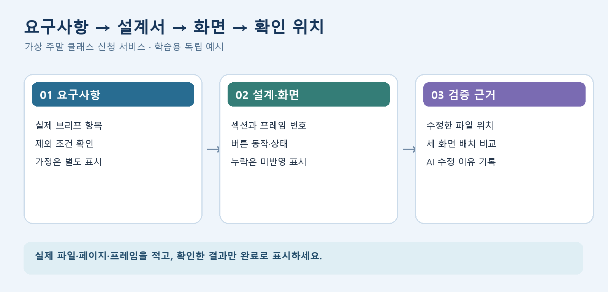

디자인 구성요소 설계 | B그룹
1. 학습 목표와 점검 순서
기본적인 서비스 구조와 화면 흐름을 만들었다면, 브리프 조건이 어느 문서와 프레임에 반영됐는지 확인합니다. 한 번에 모든 화면을 다시 만들지 말고 제안서 한 항목을 화면 설계서와 와이어프레임까지 따라가세요.
- 요구사항→설계서→와이어프레임의 대응 위치를 표시한다.
- 버튼·토글·신청 폼에서 행동 뒤 화면 반응을 적는다.
- 디바이스별 기준과 LLM 검증 내용을 실제 근거로 보완한다.
가상 예시는 '주말 클래스 신청' 화면입니다. 본인의 서비스 조건, 실제 정보와 임시 문구를 구분하여 적용하세요.
디자인 구성요소 설계 | B그룹
2. 요구사항과 화면의 대응표 만들기
기존 제안서에서 필수 콘텐츠와 제한 조건을 뽑아 각 항목의 화면 위치를 기록합니다. 특정 항목이 문서에는 있는데 화면에 없으면 '미반영'으로 남기고 수정할 프레임을 지정하세요.
| 가상 요구사항 | 설계서 위치 | 화면에서 확인할 것 |
|---|
| 수업 일정 안내 | S-02 일정 섹션 | 날짜·시간·장소가 읽히는지 |
| 신청 경로 안내 | S-04 신청 섹션 | 버튼에서 신청 단계로 이어지는지 |
| 비용이 미확정 | S-03 비용 표기 | 임의 가격을 실제 정보처럼 쓰지 않았는지 |
실습양식 01에서 자신의 실제 파일명과 섹션·프레임 번호를 적습니다. 누락은 완료로 표시하지 말고 수정 위치와 재확인 결과를 남깁니다.
디자인 구성요소 설계 | B그룹
3. UI 상태와 사용자 행동을 구분하기
각 UI 요소에 대해 기본 상태, 사용자의 행동, 화면 반응, 오류와 완료를 써 봅니다. 모든 요소에 같은 상태를 억지로 적용하지 말고, 실제 설계에 있는 요소부터 선택합니다.
| 요소 | 행동과 반응 | 예외 상태 |
|---|
| 신청 버튼 | 누르면 입력 화면으로 이동 | 필수 항목이 없으면 오류 위치 안내 |
| 선택 카드 | 선택한 카드가 강조되고 요약이 바뀜 | 미선택 상태의 다음 단계 비활성 검토 |

실습양식 02에는 자신의 버튼 또는 입력 요소 한 가지를 골라 실제 화면의 모든 변화를 연결합니다.
디자인 구성요소 설계 | B그룹
4. 화면별 규칙과 AI 수정 기록 보완
데스크톱·태블릿·모바일에서 그리드, 카드 배열, 내비게이션, 글자와 버튼, 이미지 크롭, 정보 우선순위를 표로 정리합니다. 임의 수치를 복사하지 말고 자신의 대표 프레임을 확인해 값을 채웁니다.
| 검수 질문 | 확인 위치 |
|---|
| 태블릿 폭에서 카드와 문장이 잘리는가? | 해당 프레임과 설계서의 카드 규칙 |
| AI가 제안한 문구가 브리프 조건과 맞는가? | 요청·최초 결과·수정 기록·최종 화면 |
| 디자인 가이드 수치가 모든 화면에 같은가? | 타이포·간격·버튼 표와 대표 프레임 |
실습양식 03에 LLM 요청→결과 요약→문제→수정→반영 또는 제외→확인 위치를 기록합니다. 체크리스트의 '완료'만으로는 검증 근거가 되지 않습니다.
디자인 구성요소 설계 | B그룹
5. 완료 기준과 후속 활동
- 필수 요구사항이 실제 문서와 화면에 연결되거나 미반영 항목의 수정 위치가 명시됐다.
- UI 요소 한 개의 행동·반응·오류 또는 완료 상태가 실제 화면과 일치한다.
- 태블릿을 포함한 화면별 기준이 대표 프레임에서 확인된다.
- AI 결과 수정 사항과 확인 위치를 최소 한 건 기록했다.
다음 관련 수업에서는 대응표에서 미반영으로 표시한 항목 한 건을 실제 화면에 반영하고 전후 차이를 설명합니다.
디자인 구성요소 설계 | B그룹
6. 참고자료와 적용 활동
한국어 무료 공개 자료입니다. 안내한 범위를 읽거나 보고 자신의 결과물에 적용하세요.
Figma Learn
Figma Design의 프레임
학습 범위: 프레임의 그리드·제약조건·화면 크기 부분
읽고 할 일: 대표 화면을 데스크톱·태블릿·모바일로 나누고 배치 차이 확인하기
Figma Learn
프로토타입 연결
학습 범위: 트리거와 액션, 목적지 설명
읽고 할 일: 버튼 한 개의 행동과 도착 화면을 상태표에 적기
Figma Learn
Auto Layout 가이드
학습 범위: 패딩과 요소 간 간격 부분
읽고 할 일: 카드의 긴 문구가 화면 폭에 따라 줄바꿈되는지 검수하기